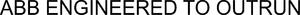

Trade Mark Journal No.2025/045 7 November 2025
WO0000001870824 (7,9,11,12,37,41,42)
Office of origin: Switzerland
Date of International Registration:10 December 2024
Date of designation in the UK:
10 December 2024

International priority date claimed: 30 October 2024
(Switzerland)
(823812)
- Class 7
- Machines for use in the fields of electrification, industrial automation; machines for industrial robotics and drive mechanisms, motors and engines, generators, mechanical power mechanisms and drive systems, machine tools and mechanical tools and their components for use in the fields of electrification and industrial automation; machine tools and mechanical tools and their components for industrial robotics and drive mechanisms, motors and engines, generators, mechanical power transmission mechanisms and drive systems; motors and engines and motor and engine parts other than for land vehicles; clutches and power transmission devices and their components, other than for land vehicles; agricultural implements other than hand-operated; ship propulsion mechanisms; water vehicle propulsion mechanisms; electric and power generators; electricity generators and current generators; handling and transport equipment and installations; couplings and clutches, other than for land vehicles; control apparatus for machines, driving motors or motors and engines; drives for machines; elevator drives; drives for conveyors; wind turbines generating electricity; turbines other than for land vehicles; wind turbines; lifts and lift controls; handling and transport apparatus; conveyors and belt conveyors; turbocompressors; pumps, compressors and blowing machines; mills (machines); drilling rigs, floating or non-floating; lifts (machines) and elevator control apparatus; robots; industrial robots; hoists for transmission shafts; components and accessories for all the aforesaid goods.
- Class 9
- Scientific, research, navigation, surveying, photographic, cinematographic, audiovisual, optical, weighing, measuring, signaling, detecting, testing and control apparatus and instruments, and their components; apparatus and instruments as well as their components for conducting, switching, transforming, accumulating, regulating or controlling the distribution or use of electricity; apparatus and instruments for sound, image or data recording, transmission, reproduction or processing; recorded or downloadable media, software, blank digital or analog recording and storage media; mechanisms for coin-operated apparatus; computers and computer peripheral devices; nautical, meteorological, automation, analysis, diagnostic (other than for medical use), display, checking (supervision), monitoring, control, alarm and emergency apparatus, instruments and equipment, and their components; apparatus and instruments as well as their components for the production, processing, storage, transport, supply or measurement of the distribution or use of electricity; software (downloadable); tablet computers; data recorders; security, safety, protection and signaling apparatus, instruments and equipment; electric distribution boards and their components; sensors; tubes (electricity); pipework (electricity); cable sheaths (lines); magnetic recording media; chargers for electric batteries; electrical condensers [capacitors]; electric collectors with photovoltaic elements; terminals (electricity), electric wires, conduits and cables; inductors (electricity); electric and electronic apparatus, devices and instruments and their components for the production, distribution and supply of energy by photovoltaic installations; fuel cells; transformers; current inverters; current rectifiers; current converters; connectors (electricity); electric transistors, thyristors, diodes; semiconductor power elements; electric resistances; batteries (cells); electric apparatus; electric recloser; switches; rectifiers; electric relays; ducts [electricity]; electrical safety fuses and devices; switchboxes (electricity); distribution boards, racks and plates (electricity); mains distributors and sub-distributors for electrical energy; apparatus and devices for the transport, distribution and control of electric current; solar cells; solar modules; electric cables, electricity conduits and electric wires; electric converters; junction sleeves for electric cables; integrated circuits (chips); printed circuits; electric sockets; gauges; power modules (calculators); energy distribution boards and electric and electronic installations and their components for the remote control of lasers for automated industrial processes; plugboards and distribution consoles (electricity); electrical regulators; electric and electronic apparatus and devices, namely microcircuits, microchips (computer hardware), integrated circuits for defined use, custom integrated circuits and integrated circuits for specific applications; power supplies and their components; database and application integration software; interfaces (for computers); recorded data; radio broadcasting apparatus and equipment; communications equipment; data transmission networks; equipment for telecommunications; electronic, magnetic and optical storage media, floppy disks, compact disks, magnetic disks, optical disks; optical compact disks, data protection backup devices; semiconductor chips for storing technical data; downloadable electronic publications; data processing equipment; microprocessors; downloadable software applications for use with mobile devices; semi-conductors; printed circuit boards; data backup devices; operating system programs for computers; modems; sensors, gateways and antennas for the Internet of Things (IoT); application computer software, particularly for implementing the Internet of Things (IoT); computer hardware modules intended for use in the Internet of Things (IoT); computer hardware and software intended for use in electronic apparatus using the Internet of Things (IoT); computer hardware and software for data analysis, machine learning, automation processes and Internet of Things (IoT) applications; software enabling the implementation and provision of machine learning, artificial intelligence, analysis of large amounts of data in terms of relationships between the data and the analysis of the data; computer software development tools; electric and electronic regulators and control systems; application software for the Internet of things (IoT) and regulation and monitoring applications; computer servers; computer software platforms; downloadable software for blockchain technology; downloadable virtual goods, namely downloadable virtual apparatus and instruments for the production, processing, storage, transport, supply or measurement of the distribution or use of electricity, downloadable virtual machines, machine tools and mechanical tools, downloadable virtual drives for machines and motors and engines, downloadable virtual motors and engines, downloadable virtual generators, downloadable virtual products for mechanical power transmission, downloadable virtual automation controls and downloadable robotics digital files authenticated by non-fungible tokens (NFTs); control apparatus for controlling industrial robots; computer hardware and software for regulating and controlling industrial robots; software for the automation of robot processes for industrial automation; apparatus and instruments for controlling and regulating robots; educational robots; surveillance robots for security; application software for robots; electric control apparatus for robots; laboratory robots; humanoid robots with artificial intelligence for scientific research purposes; telepresence robots; charging stations for electric vehicles; electric accumulators for vehicles; interference suppression devices; storage devices for data processing systems; breakers (circuit breakers); voltmeters; automatic control apparatus for vehicles; electric cords, namely high-voltage overhead lines; electric cables; transformers (electric); electric control units for machines and motors and engines; electrical and electronic control apparatus and instruments; nautical apparatus and instruments; components and accessories for all the aforesaid goods.
- Class 11
- Apparatus and installations for lighting, heating, cooling, steam generation, drying, ventilation and water supply; solar thermal collectors (heating); ventilating and air-conditioning installations; chromatography apparatus for industrial use; nuclear fuel processing and nuclear reaction braking installations; regulating and safety accessories for gas apparatus; apparatus for lighting, including large-area lighting, linear lighting, narrow/small lighting, emergency lighting, security lighting and lighting by projectors; components and accessories for all the aforesaid goods.
- Class 12
- Vehicles; apparatus for locomotion by land, air or water; automated guided vehicles; robotic cars; electric cars; driving chains for land, air, sea and rail vehicles; aeronautical apparatus and machines; screw-propellers; vertical blade propellers; propellers for boats; hydraulic circuits for vehicles; transmission chains and belts for land vehicles; turbines for land vehicles; couplings for land vehicles; remote-controlled vehicles other than toys; components and accessories for all the aforesaid goods; electric motors and engines for cars; gear boxes for land vehicles; gearing for land vehicles; engines for land vehicles.
- Class 37
- Construction services; machinery, motor and engine installation and repair services; computer installation and repair services; installation servicing and repair services relating to products in the fields of electrification, industrial automation, robotics and drive mechanisms, motors and engines, generators, mechanical power transmission products and integrated digital drive solutions; maintenance, repair and installation of industrial equipment and power lines; maintenance, repair and installation of computers and computer network equipment; underwater construction; maintenance, installation and repair of computer hardware and computer network installations; mining of natural resources; project management in the field of construction (works supervision); installation, repair and servicing of measuring apparatus and instruments; rental of industrial robots intended for use in the context of construction, repair, maintenance and installation services; servicing and repair services for vehicles; repairing, servicing, refueling and recharging electric vehicles; installation, repair and servicing works relating to charging stations for electric vehicles; installation, servicing, repair and troubleshooting of electric machines and equipment; pipeline construction and maintenance; installation, servicing, repair and maintenance of computer hardware; provision of information and advice relating to all the aforesaid services.
- Class 41
- Education; training; entertainment; sporting and cultural activities; provision of courses through an online platform; electronic desktop publishing; publication of books; publishing texts (excluding publicity texts); editing services, other than printing; drafting and publishing of texts other than advertising texts; organizing training, seminars, conferences, workshops, events and exhibitions; provision of non-downloadable electronic publications online; organizing exhibitions for scientific purposes; provision of non-downloadable digital image files authenticated by non-fungible tokens (NFTs); provision of information and advice relating to all the aforesaid services.
- Class 42
- Scientific and technological services as well as research and design services relating thereto; industrial analysis, industrial research and industrial design services; quality control and authentication services; design and development of computers and software; information technology services; industrial research, advice, planning and design of industrial installations; testing of materials; underwater and underground exploration; technological advice in the field of environmental protection; architectural services; engineering; energy auditing; monitoring and control of industrial processes; information technology monitoring of industrial sites and power plants; technical measuring and testing services; computer technology advisory services in the field of data and Internet security; research, design and development of production lines, machines, industrial robots, robots as well as computer software and hardware for the control and provision of production lines, machines, machine tools, robots and industrial robots; technological advice with respect to production lines, machines, industrial robots, robots, computer hardware and software and industrial automated logistics; Software as a Service (SaaS); temporary provision of online non-downloadable operating software for accessing and using a cloud computing network; hosting of platforms on the Internet; creation of data processing programs; software as a service (SaaS) with machine learning software, data retrieval, data analysis and artificial intelligence services; providing technical information on the use of computers, computer hardware, software and computer networks; configuration, installation, maintenance, troubleshooting, repair and updating of software; computer Platform as a Service (PaaS); cloud computing; providing online non-downloadable cloud-based software; providing non-downloadable software applications for use with mobile apparatus; provision of computer programs on data networks, particularly on the Internet and the World Wide Web; design and development of computer hardware and software for industrial applications; industrial analysis services; services of a network engineer, including advice with respect to computer and network security; scientific and industrial research and advice with respect to network technology; artificial intelligence research; technological advice on artificial intelligence; software as a service (SaaS) with computer software platforms for artificial intelligence; Engineering in relation to robotics; designing and developing computer software for industrial automation; software as a service (SaaS) in the field of industrial automation; providing technical advice relating to computer hardware and software, particularly in the field of industrial automation; server hosting; authentication of data via a blockchain; data storage via a blockchain; certification of data via a blockchain; Blockchain as a Service (BaaS); user authentication using blockchain technology; hosting non-rechargeable virtual goods for the authentication and quality verification of their real twins, namely non-rechargeable virtual apparatus and instruments for the production, transformation, storage, transport, supply or measurement of the distribution or use of electricity, non-rechargeable virtual machines, non-rechargeable virtual machines and non-rechargeable virtual machines, machine tools and power-operated tools, non-rechargeable virtual drives for machines and motors and engines, non-rechargeable virtual motors and engines, non-rechargeable virtual generators, non-rechargeable virtual mechanical power transmission products, non-rechargeable virtual automation controls and non-rechargeable virtual machines and robotic apparatus; technical advice concerning solar energy installations, photovoltaic installations and charging stations for electric vehicles; providing scientific information and technological advice with respect to e-mobility; industrial design services; packaging designer services; quality control; underwater exploration; engineering consultancy on environmental impact, advice with respect to energy saving, technical advice on energy-saving measures, technical advice in the field of energy saving and energy efficiency; carrying out chemical analyses; oil prospecting; oil-well testing; conducting analyses for oil extraction services; conducting appraisals on oil reserves; services provided by a physicist; technical consulting services relating to computer; recovery of computer data; software maintenance; computer system analysis; research and development of new products; research in the field of technology and engineering; developing technical instruction manuals; engineering, including engineering advice; construction work planning; technical project planning and advice relating thereto; rental of computer software and data processing equipment; configuration of computer hardware by means of software; technical support services relating to the diagnosis of faults in computer hardware; provision of information and advice relating to all the aforesaid services.
ABB Asea Brown Boveri Ltd
Representative: Kilburn & Strode LLP, Lacon London, 84 Theobalds Road, Holborn London WC1X 8NL UNITED KINGDOM